Canton Fair em números: 35.000 expositores diretos · 246.000 compradores · 1 missão brasileira desde 2012

12.000 km de São Paulo a Guangzhou — a AMO Embarque organiza todo o percurso · missaocantonfair.com
A Canton Fair é onde se decide quem vai liderar o mercado nos próximos anos. 35.000 fabricantes. 3 fases. Descubra em qual delas o seu negócio tem mais a ganhar.
Canton Fair é a maior feira multissetorial do planeta. Inaugurada em 1957 em Guangzhou, China, ocorre 2 vezes ao ano — em abril e outubro. São 35.000 expositores em 1,1 milhão de m², com compradores de mais de 210 países. É onde se encontram os produtos que vão moldar os próximos anos no seu setor.
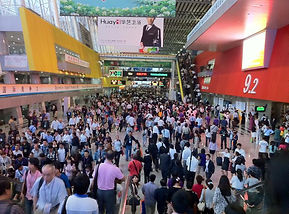
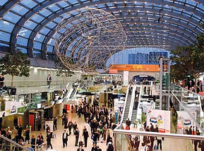
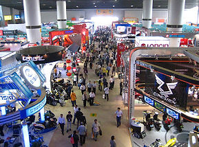
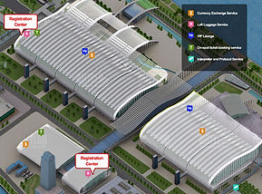
Canton Fair é o epicentro global dos negócios — e você pode estar lá. Uma experiência guiada para empresários que querem explorar tendências, validar fornecedores, negociar direto com fabricantes e abrir novas oportunidades antes dos concorrentes.
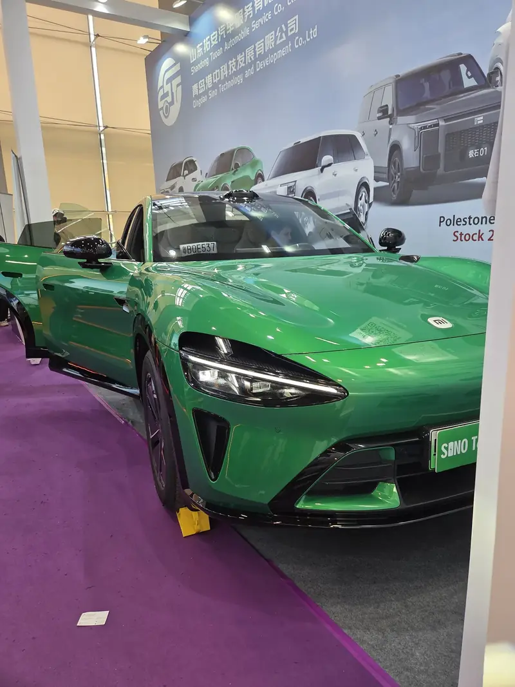
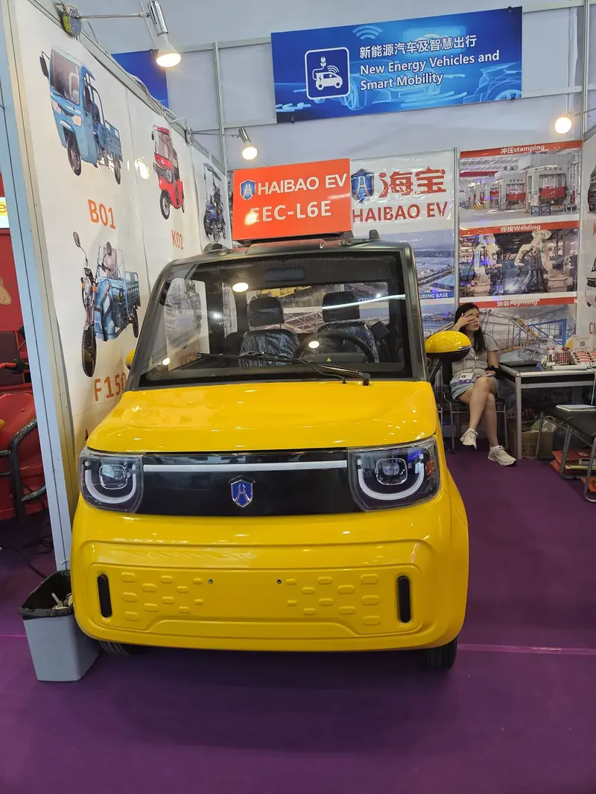
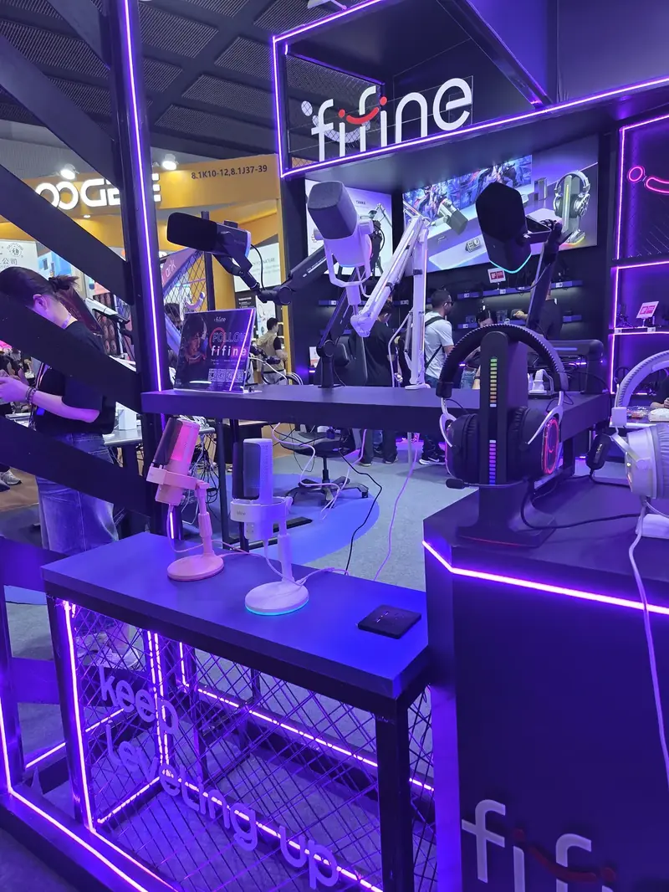
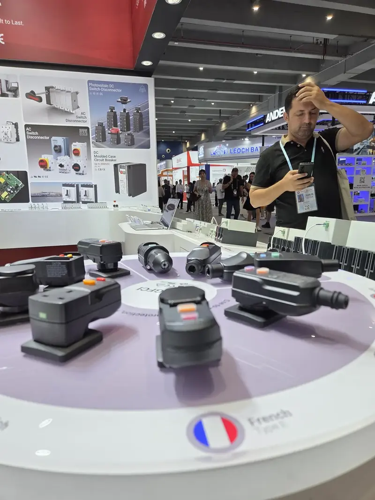
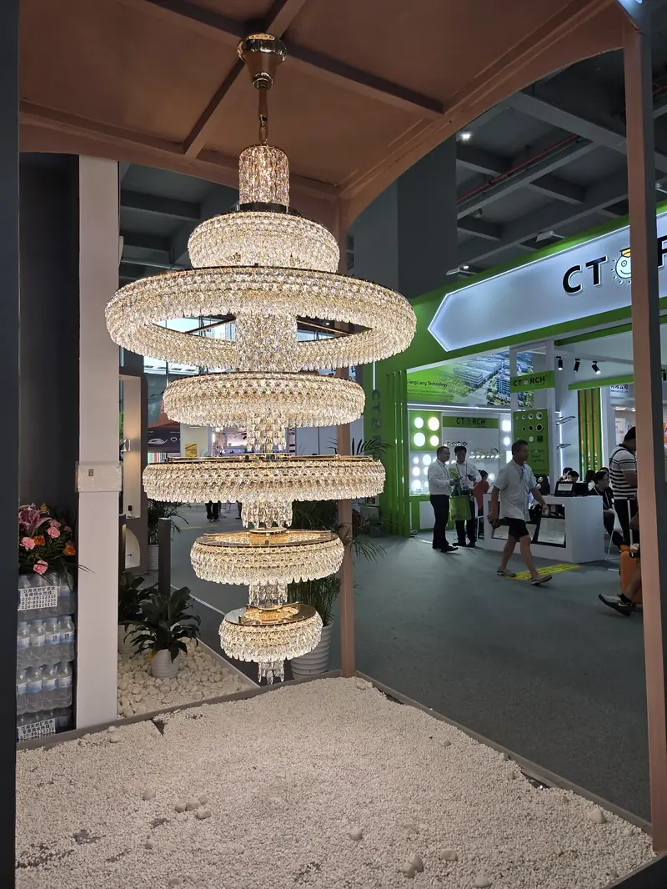
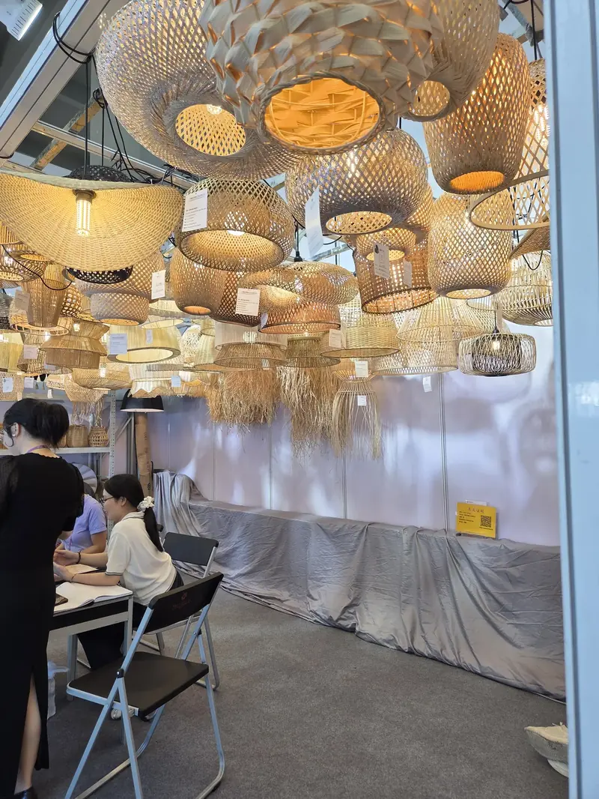
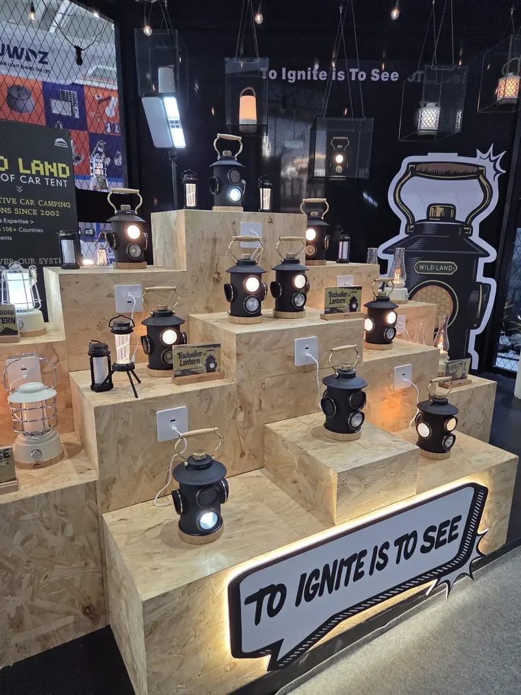
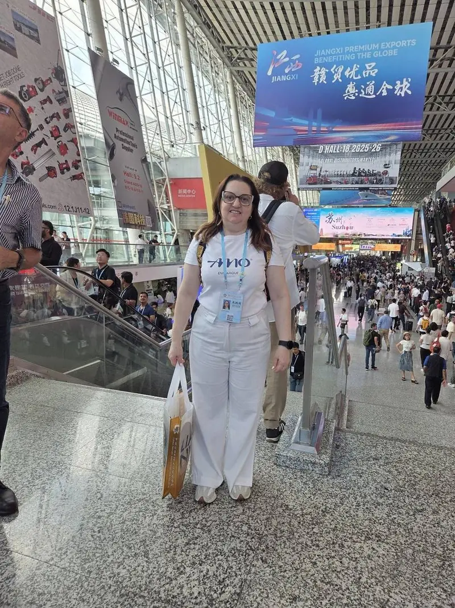
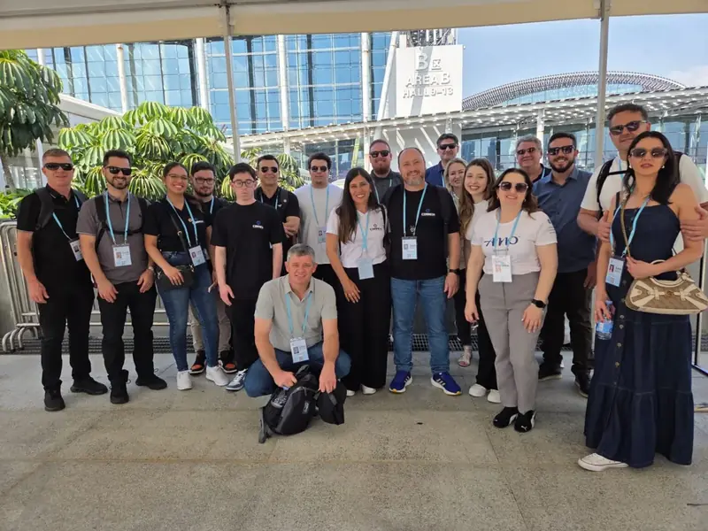
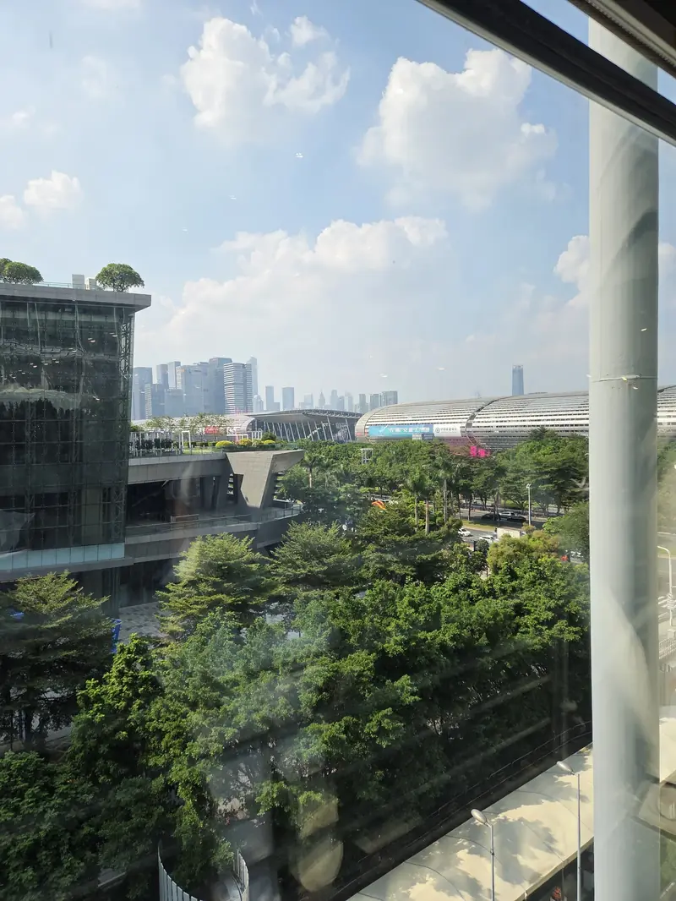
"Foi uma experiência fantástica, tivemos uma atenção especial da Amo Embarque em todos os trechos da viagem. Parabéns a todos os organizadores desta missão."
"A agência Amo Embarque nos atende há muitos anos, porque é uma agência séria e de confiabilidade. Monta nossos pacotes de acordo com nossas particularidades e sempre disponíveis para nos ajudar."
"A Amoembarque nos surpreendeu com tamanha excelência. Retorno rápido, várias opções e lembram de todos os detalhes — documentações, seguro viagem, mensagens durante o percurso."
Os empresários que mais fecham negócio na feira não são os que foram de última hora. São os que chegaram sabendo exatamente qual fornecedor visitar, que quantidade mínima cada fábrica pede e qual setor priorizar.
Com 12 meses de antecedência, a AMO prepara você do zero: mapeamento do seu setor, briefing personalizado, roteiro por pavilhão e orientação de negociação — antes mesmo de embarcar.
O calendário da feira é fixo: a edição de primavera abre em 15 de abril e a de outono em 15 de outubro, sempre em três fases de cinco dias com três dias de intervalo entre elas. Sobre documentação: a isenção unilateral de visto concedida pela China está declarada até 31 de dezembro de 2026 — para viagens de 2027 a AMO orienta o visto caso a caso.
Sem compromisso · Resposta em até 24h · Grupo aberto para as duas edições de 2027
Cada setor tem um momento certo na feira. 3 perguntas rápidas — e você sabe exatamente quando precisa estar em Guangzhou.
20+ empresários do Sul do Brasil já foram com a AMO em 2025.
Responda abaixo e receba o resultado + proposta personalizada.
A AMO envia a proposta da sua fase direto no seu WhatsApp.
— Sem spam. Seus dados não são compartilhados.
O calendário da Canton Fair é fixo há décadas: a edição de primavera começa sempre em 15 de abril e a de outono sempre em 15 de outubro, em três fases de cinco dias com três dias de intervalo entre elas. Em 2027 isso coloca a 141ª edição entre 15 de abril e 5 de maio e a 142ª entre 15 de outubro e 4 de novembro. O detalhamento por hall e por setor sai a cada edição e pode variar.
Quem decide com um ano de antecedência escolhe a fase certa, negocia passagem antes da alta e chega com agenda montada. Quem decide em cima da hora aceita o que sobrou.
Quem organiza estas missões é a AMO Embarque, agência de viagens e turismo de Chapecó — SC, com mais de 15 anos de mercado e missões à Canton Fair desde 2012. A página de cada edição fica em amoembarque.com.